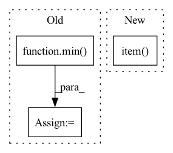

Pattern ID :9668

Before Change
if errnorm == 0:
factor = self.max_factor
else:
factor = min(self.max_factor, self.step_mult * errnorm ** self.error_exponent)
if prev_rejected:
factor = min(1.0, factor)
After Change
// estimate the error norm
scale = self.atol + torch.maximum(y0.norm(dim=self.ydims), ynew.norm(dim=self.ydims)) * self.rtol
errnorm = self._error_norm(self.K, hstep) / scale // (...,)
accepted = bool(torch.all(errnorm < 1).cpu().detach().item())
// adjust the step size
new_factor = self.step_mult * (errnorm + 1e-8) ** self.error_exponent
In pattern: SUPERPATTERN
Frequency: 3
Non-data size: 3
Instances
Fragment ID: 34868150
Project Name: xitorch/xitorch
Commit Name: c6f0785664d60d1310778d43f14a3464660ea4d9
Time: 2021-12-30
Author: firman.kasim@gmail.com
File Name: xitorch/_impls/integrate/ivp/adaptive_rk.py
M Class Name: RKAdaptiveStepSolver
N Class Name: RKAdaptiveStepSolver
M Method Name: _single_step(3)
N Method Name: _single_step(3)
M Parent Class: object
N Parent Class: object
M File Name: xitorch/_impls/integrate/ivp/adaptive_rk.py
N File Name: xitorch/_impls/integrate/ivp/adaptive_rk.py
M Start Line: 85
M End Line: 122
N Start Line: 125
N End Line: 165
'>
Before Change
)
else:
queries_per_block = min(L, 1024//k)
threads = k * queries_per_block
blocks = ((L*k)//threads) + C + 1
query_map = torch.ones((N, H, blocks), dtype=torch.int32).cuda() * L
After Change
dtype=torch.int32
)
counts_cumsum = counts.cumsum(-1).int()
total_blocks = block_counts.sum().item()
// Actually perform the dot product
ClusteredSparseDotProduct.dot[device.type](
Q,
'>
Fragment ID: 34868145
Project Name: idiap/fast-transformers
Commit Name: ac1fd6316f59b56faa3b4e9236810d4e97ed5b15
Time: 2020-11-25
Author: avyas@idiap.ch
File Name: fast_transformers/sparse_product/__init__.py
M Class Name: ClusteredSparseDotProduct
N Class Name: ClusteredSparseDotProduct
M Method Name: forward(7)
N Method Name: forward(7)
M Parent Class: torch.autograd.Function
N Parent Class: torch.autograd.Function
M File Name: fast_transformers/sparse_product/__init__.py
N File Name: fast_transformers/sparse_product/__init__.py
M Start Line: 185
M End Line: 201
N Start Line: 164
N End Line: 208
'>
Before Change
else:
print("reject")
if self._count_reject == 4:
self.L = min(1e9, self.L / self.Lup**2)
else:
self.L = min(1e9, self.L * self.Lup)
self._count_reject += 1
After Change
elif self.iteration > 0:
print("LM loss, best loss, L: ", loss.item(), np.min(self.loss_history[:-1]), self.L)
rho = self.rho(np.min(self.loss_history[:-1]), loss, h)
print("rho: ", rho.item())
if rho > self.epsilon4:
print("accept")
self.prev_Y[0] = self.prev_Y[1]
'>
Fragment ID: 34868139
Project Name: connorstoneastro/autoprof
Commit Name: fbe08c97c09d4631dca10af988b6c645ff369c3f
Time: 2022-12-02
Author: connorstone628@gmail.com
File Name: autoprof/fit/lm.py
M Class Name: LM
N Class Name: LM
M Method Name: step(2)
N Method Name: step(2)
M Parent Class: BaseOptimizer
N Parent Class: BaseOptimizer
M File Name: autoprof/fit/lm.py
N File Name: autoprof/fit/lm.py
M Start Line: 88
M End Line: 147
N Start Line: 85
N End Line: 146